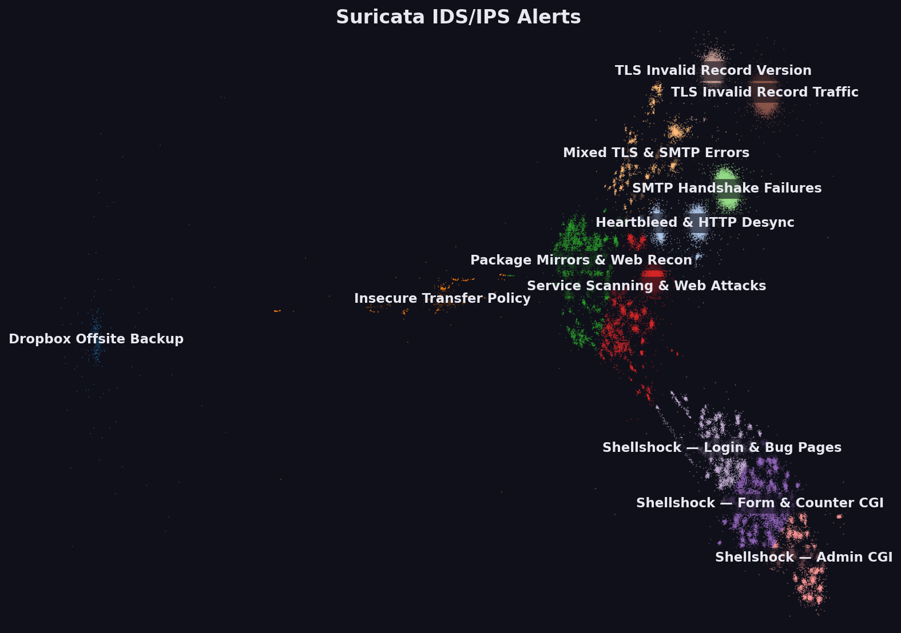

59,579 deduplicated alerts · 496,578 raw · four packet captures, 2015–2018

Everything inlined. Opens straight from disk, works offline, nothing to install. Use this one if you just want to look at the map, or need to send it to someone.
Installable, works offline once loaded, and only re-downloads what changed. Must be served over HTTP(S) — opening it from disk blocks the data fetch. See below.
Rebuilds everything from the raw eve.json captures: parsing, dedup,
layout, labels, render, PWA. Read the limitations section before changing
anything.
GitHub Pages setup, static-host requirements, how to read the map, and what each file in this folder is for.
file:// blocks, so it needs a server:
cd pwa && python3 -m http.server 8000 then open
http://localhost:8000. Hosted, it just works — the included
GitHub Actions workflow publishes pwa/ to Pages. If you only want to
look at the map, use the standalone HTML above instead.
Each point is one distinct alert — a unique combination of signature, category, protocol, target host, URI and destination port. Position comes from the semantic similarity of that text, so related attacks land together. Zooming reveals finer label layers. Clicking a point opens its details and a link to the Emerging Threats rule page for that signature.
Sources are sampled deliberately, not proportionally — they differ in size by
four orders of magnitude, so proportional sampling would have erased the honeypot
entirely. Point density is not incidence rate; use the count field
on a point's card for volume.
| File | What it is | Size |
|---|---|---|
| suricata_alerts_corpus.csv | The corpus behind the map, one row per point | 20.0 MB |
| labels.json | All 204 hand-written cluster labels | 8.7 KB |
| manifest.json | Build parameters, versions, hashes, timings | 2.7 KB |
| layout_coords.npy / cluster_assignments.npz | Pinned layout and clusters — delete these and a rebuild silently relabels the whole map | 0.5 MB |